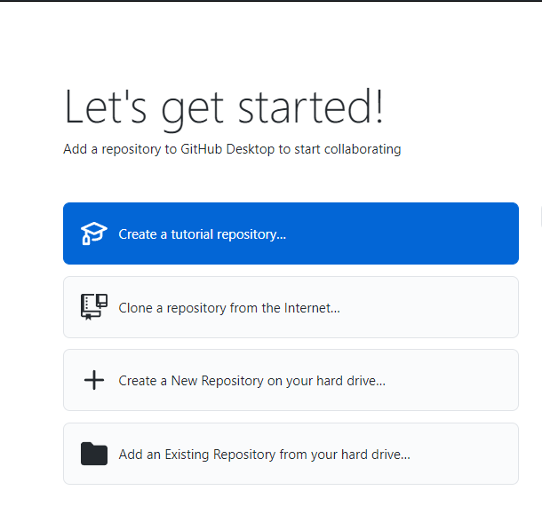

Czym jest GitHub?
Git to system kontroli wersji, który zarządza zmianami w projekcie bez nadpisywania jakiejkolwiek części tego projektu. Można scalić swoje zmiany razem ze zmianami innych uczestników projektu bez ryzyka kolizji zmian. Można nawet powrócić do wcześniejszej wersji w dowolnym momencie, ponieważ Git przechowuje historię wszystkich poprzednich wersji projektu i każdej dokonanej w nim zmiany. Dzięki GitHubowi można współpracować z innymi osobami i łączyć części projektów tak, aby nie utracić żadnych zmian. Git jest używany w wielu miejscach pracy oraz jest podstawowym narzędziem przy zespołowej pracy nad kodem.
- Zainstaluj ze strony GitHuba
- Załóż konto na stronie GitHuba.
Właśnie na stronie github.com nie posiadając własnego serwera można udostępnić swój kod, by móc pokazywać go innym osobom. Bez wykupienia konta premium GitHub pozwala na tworzenie i udostępnianie repozytoriów publicznie – prywatne repozytoria są płatne.
Co to repozytorium i branch?
Wikipedia podpowiada, że to miejsce uporządkowanego przechowywania dokumentów, z których wszystkie przeznaczone są do udostępniania. Repozytorium może zawierać wiele katalogów oraz plików napisanych w wielu językach kodowania. Jedno repozytorium często obejmuje jeden projekt.
GitHub jest świetny do pracy zespołowej dzięki branchom (oddziałom). Branche pozwalają edytować różne wersje repozytorium w jednym czasie – każdy członek danej grupy projektowej może mieć własny branch i nie ingeruje to w pracę innych osób. Branch main jest branchem finalnym, który jest odpowiednim połączeniem reszty branchy. Podczas pracy w grupie, ważne jest, aby pracować na swoim branchu.
Tworzenie pierwszego repozytorium
Jeżeli instalacja przebiegła pomyślnie, można otworzyć aplikację GitHub Desktop. Po zalogowaniu należy wybrać opcję stworzenia repozytorium – na początek opcję „Create a tutorial repository…”.
Należy się zalogować i zautoryzować konto w nowo otwartym oknie przeglądarki.
Po prawej stronie w aplikacji wyświetlają się kolejne etapy samouczka. Pierwszym krokiem jest stworzenie nowego brancha.
Zgodnie z kolejnymi krokami samouczka, należy edytować plik ‘README’ i zapisać zmiany nadając im odpowiedni opis w lewym dolnym rogu.
Tworzenie pliku README jest tradycją wśród twórców oprogramowania. Plik dostarcza informacje, czego projekt dotyczy oraz jak działa, zdecydowanie ułatwia jego zrozumienie osobom niezaangażowanym w tworzenie kodu, ale przyda się również autorom, wracających do kodu po dłuższym czasie.
Jak udostępnić treść i zacząć działać?
- Należy zalogować się na stronie github.com
- Po lewej stronie znajduje się sekcja „Recent repositories”, a także wyróżniony przycisk do stworzenia nowego repozytorium.
- Aby dodać plik na serwer na dany branch, wystarczy zmienić branch na wybrany oraz kliknąć „Add file” – jest opcja stworzyć nowy plik w wybranym rozszerzeniu albo załączyć z komputera (można również przeciągnąć plik prosto z folderu). Jest to push – wysyłanie danych na serwer.
-
Aby pobrać pliki z danego brancha, należy kliknąć zielony przycisk „Code” i wybrać odpowiadającą opcję – otworzyć folder w GitHub Desktop lub pobrać w ZIPie na komputer.
-
Wraz z rozwojem projektu, należy co pewien czas połączyć branche, tak, aby uaktualnić branch main. Po dodaniu nowych plików przez osobę z projektu pojawi się powiadomienie i opcja „pull request”, czyli wysłanie prośby o połączenie pracy z branchy.
Po wysłaniu prośby pojawi się ona na górze w zakładce „Pull request” – tam można sprawdzić, czy występują błędy powiązane z łączeniem branchy i jeżeli takowych nie ma, to osoba uprawniona może potwierdzić połączenie.